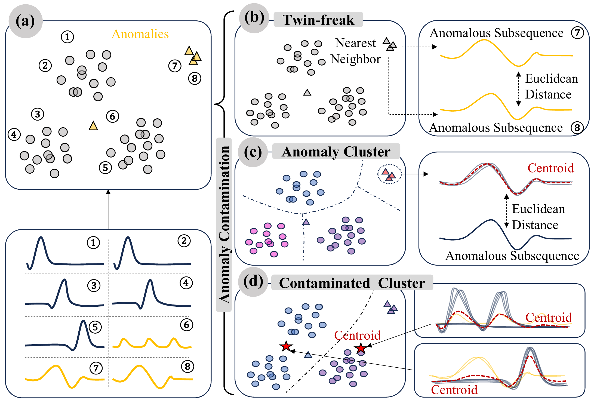
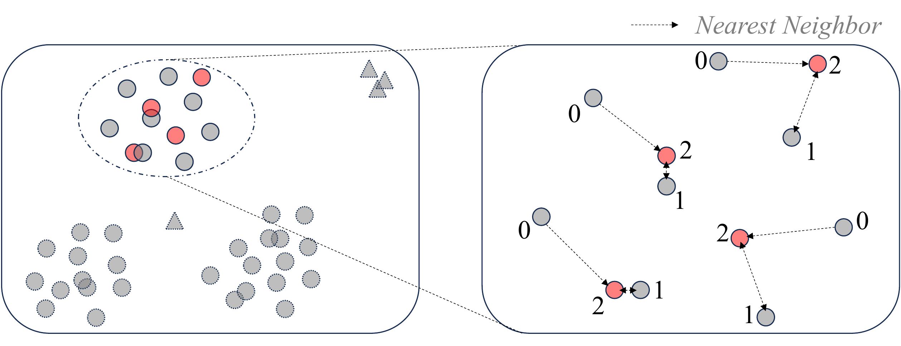
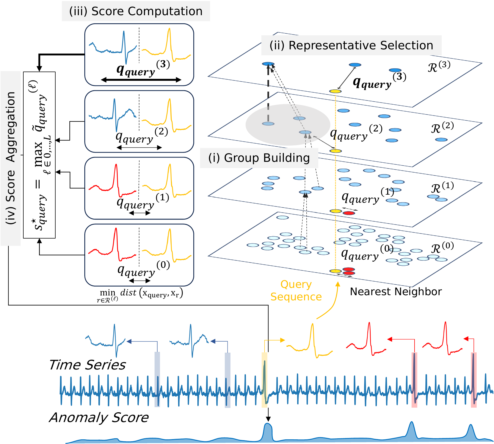
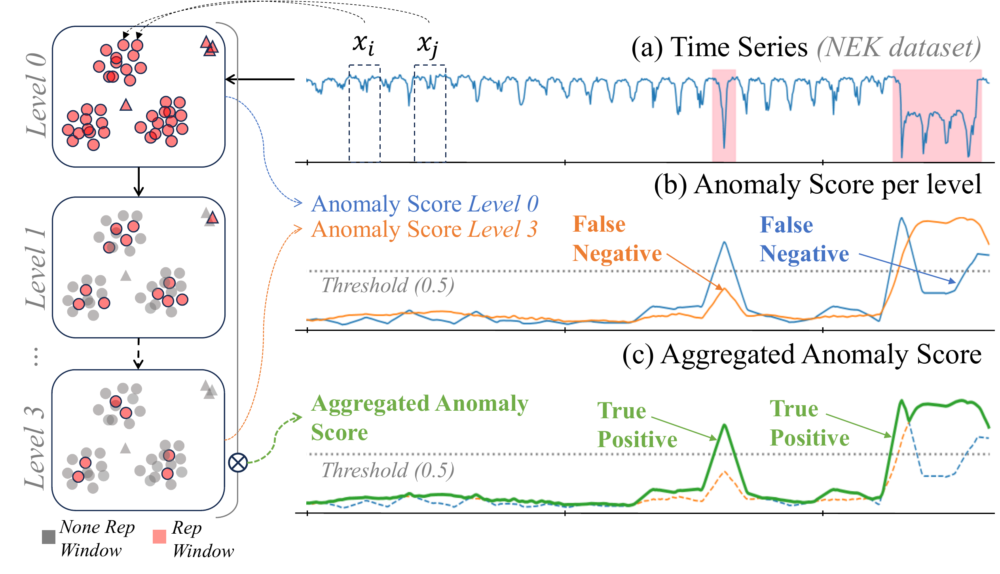
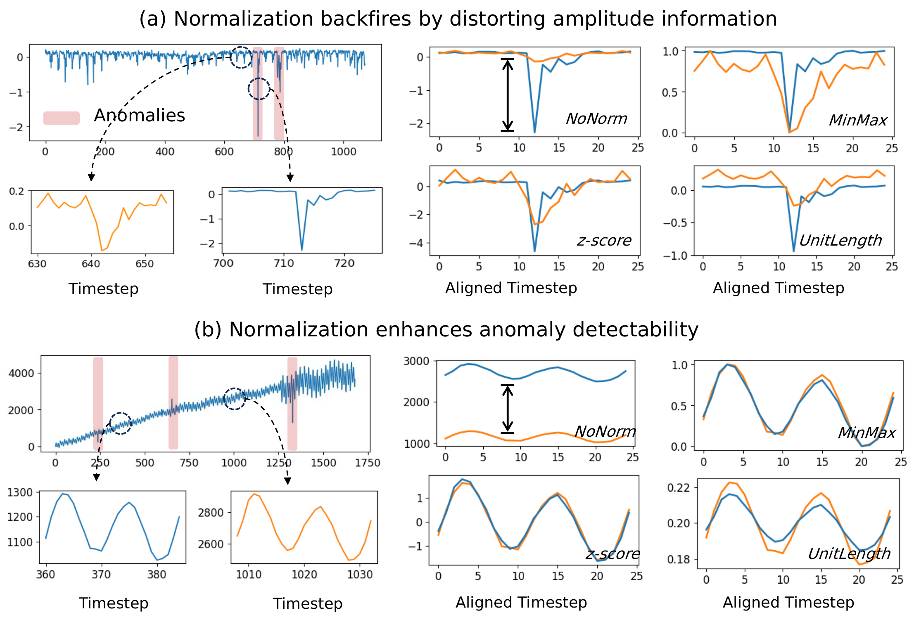
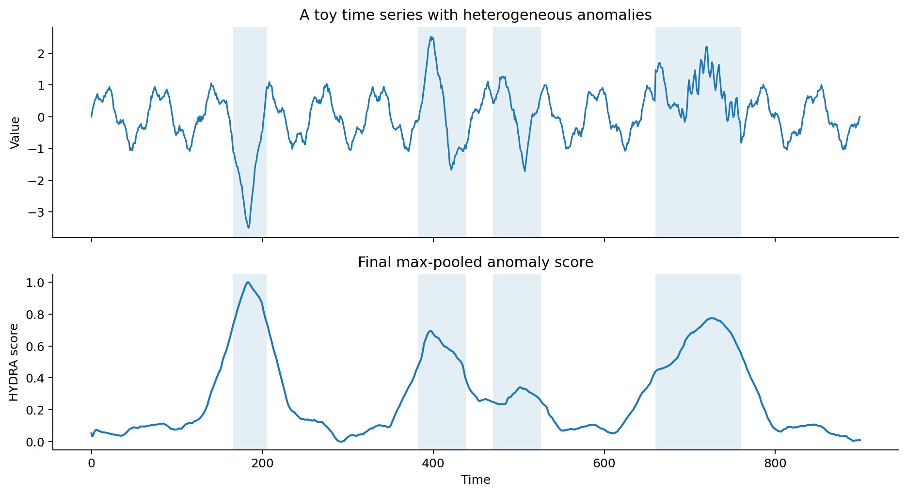
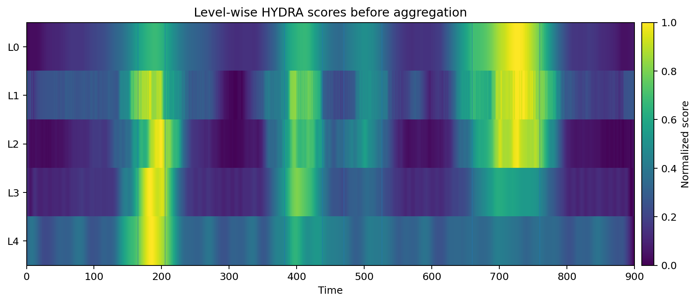
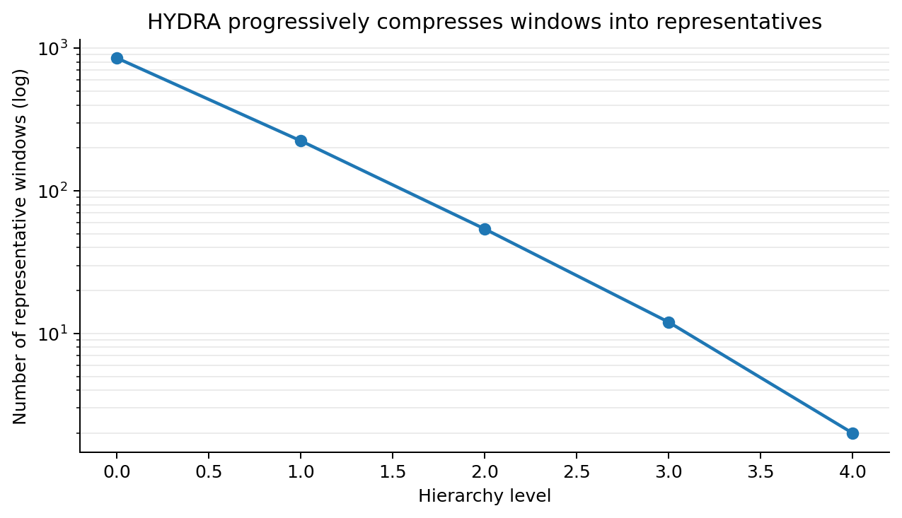
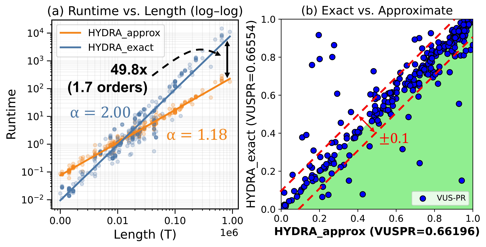
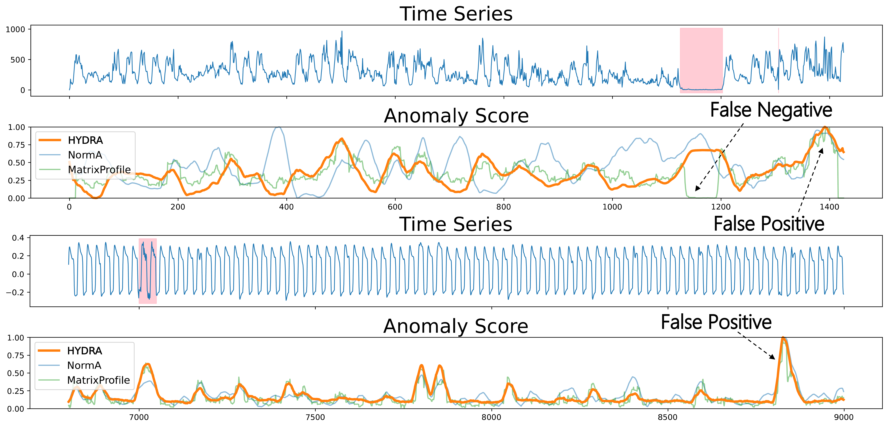

HYDRA: Hierarchical Normal References for Robust Time-Series Anomaly Detection
Time-series anomaly detection sounds simple: find the unusual parts of a sequence. In practice, however, anomalies are not unusual in the same way. A server workload can be interrupted, an ECG recording can contain repeated abnormal beats, a sensor can show a sharp spike, and an activity signal can drift into a different periodic pattern. A detector that is excellent for one of these cases can fail on another.
HYDRA starts from this observation. Instead of committing to one anomaly semantics, it builds a hierarchy of representative subsequences and asks whether each query window deviates from normal references at any level of that hierarchy. This makes HYDRA behave less like a single detector and more like a structured way of constructing cleaner reference sets for distance-based anomaly detection.
The main insight is not simply to ensemble scores. HYDRA changes the reference construction process itself.
The problem: the reference pool is contaminated
Many strong time-series anomaly detectors operate on sliding windows. Matrix Profile-style methods compare each window to its nearest non-overlapping neighbor; clustering-based methods compare a window to a centroid or representative pattern. Both views are useful, but both implicitly assume that the references are reliable.
That assumption breaks when anomalies are present in the data. If the same abnormal shape appears more than once, the nearest neighbor of an anomalous window may be another anomaly. This is the classic “twin-freak” issue: repeated anomalies hide each other. If abnormal windows form a compact group, a clustering method may absorb them into an anomaly cluster and treat the cluster as normal structure.

HYDRA's central question is: can we construct references that become more normal as the hierarchy gets coarser?
HYDRA's idea: hierarchical normal references
HYDRA first converts the time series into overlapping subsequences. At the lowest level, there are many windows. It then builds local groups of similar windows and selects one representative from each group. These representatives form the next level. Repeating this process creates a hierarchy: many fine-grained representatives at early levels and fewer, more stable representatives at later levels.
The key assumption is simple and useful: anomalies are usually a minority. Even if a few anomalous windows survive one round of representative selection, they are likely to become minorities in mixed groups at the next level. Over several levels, the representative set is progressively purified, while normal recurring patterns are retained.

This is why HYDRA is different from a late-stage ensemble. A conventional ensemble combines final scores from multiple detectors. HYDRA instead produces multiple levels of reference sets, computes scores at each level, standardizes the level-wise evidence, and then keeps the strongest signal for each window.
How the algorithm works
The pipeline can be summarized in four steps. First, HYDRA extracts sliding windows from the input time series. Second, it builds local groups by nearest-neighbor structure. Third, it selects representative windows and computes each query window's distance to the nearest representative. Fourth, it standardizes scores within each level and max-pools across hierarchy levels.

This level-wise design matters because no single level is universally best. Fine levels contain many representatives, so they are sensitive to subtle local deviations. Coarse levels contain fewer representatives, so they emphasize larger structural deviations. Aggregating across levels lets both types of evidence survive.

Why normalization is tricky
Subsequence detectors often normalize each window before computing distances. Normalization can be helpful for shape-based anomalies because it removes scale bias. But it can also suppress amplitude-driven anomalies, such as spikes or sudden magnitude changes, where the absolute value is exactly the signal we care about.
HYDRA avoids relying on a single normalization choice. It computes raw-window distances and then balances levels through score standardization before aggregation. In other words, it does not force every window into one normalized view; it lets multiple levels contribute evidence.

Running HYDRA
The public repository provides a compact API. The basic workflow is to create a HYDRA model, call compress_and_score_multi, and then call ensemble_maxpool_windows to obtain the final anomaly score.
git clone https://github.com/thedatumorg/HYDRA.git
cd HYDRA
conda create -n HYDRA python=3.11
conda activate HYDRA
pip install -r requirements.txt
pip install -e .A minimal example follows the usage in the repository:
import numpy as np
import HYDRA_loader as loader
def run_HYDRA(data, winsize=30):
model = loader.HYDRA(winsize, mode='approx')
model.compress_and_score_multi(data)
ens_score, _ = model.ensemble_maxpool_windows()
return ens_score.ravel()
X = np.sin(np.linspace(0, 20, 500)) + 0.1 * np.random.randn(500)
score = run_HYDRA(X, winsize=30)After obtaining the score, we can plot the input series and HYDRA's anomaly score:
import matplotlib.pyplot as plt
fig, axes = plt.subplots(2, 1, figsize=(10, 5), sharex=True)
axes[0].plot(X)
axes[0].set_title('Input time series')
axes[0].set_ylabel('value')
axes[1].plot(score)
axes[1].set_title('HYDRA anomaly score')
axes[1].set_xlabel('time')
axes[1].set_ylabel('score')
plt.tight_layout()
plt.show()
Glassbox-style visualization
HYDRA is also naturally interpretable because it produces intermediate objects: representative sets, level-wise scores, and the final aggregated curve. A GlassboxAD-style interface can expose these pieces rather than only showing the final anomaly score.
# The exact attribute names may change with the final repo API, but the
# debugging idea is to inspect scores before max-pooling them.
model = loader.HYDRA(win_size=48, mode='approx', debug=True)
model.compress_and_score_multi(X)
final_score, final_window_score = model.ensemble_maxpool_windows()
# Typical diagnostics to expose in a GlassboxAD-style panel:
# 1) final_score: final anomaly curve
# 2) level-wise scores before max-pooling
# 3) number of representatives retained at each hierarchy level
# 4) the hierarchy level that contributes the maximum score at each timeThe most useful diagnostic view is a level-wise score heatmap. It shows whether a detected segment is mainly supported by fine levels, coarse levels, or many levels at once.


What the experiments show
The paper evaluates HYDRA on the TSB-AD benchmark across univariate and multivariate datasets. The empirical message is that hierarchical reference construction is not only an interpretability device; it also improves robustness across different domains and anomaly types.

HYDRA also includes an approximate variant. This is important because exact nearest-neighbor computation can become expensive for long time series. The approximate version uses approximate nearest-neighbor search while preserving the hierarchy's main behavior: representative selection does not require perfect neighborhoods as long as the approximate neighborhoods are reliable enough.

When HYDRA is most useful
HYDRA is especially useful when a dataset may contain multiple anomaly semantics: isolated discords, repeated abnormal shapes, amplitude-driven spikes, and longer persistent deviations. These cases are difficult for a single fixed-level or fixed-normalization method because the “right” reference depends on the anomaly type.
There are still limitations. HYDRA remains a distance-based window method, so its success depends on whether the chosen window length and distance representation capture the relevant abnormal behavior. If anomalies are no longer rare, or if normal and abnormal windows are not distinguishable by the distance representation, the hierarchy can also fail.

The takeaway is that HYDRA's contribution is not merely a new score. It is a different way to build references for subsequence anomaly detection. By progressively selecting representatives, scoring against them, and aggregating evidence across hierarchy levels, HYDRA reduces contamination from anomalies while preserving the ability to detect heterogeneous abnormal patterns.
Resources. Code: github.com/thedatumorg/HYDRA. Paper: HYDRA: A Multi-Level Hierarchy-Driven Approach for Robust Anomaly Detection in Time Series. Demo system: GlassboxAD.